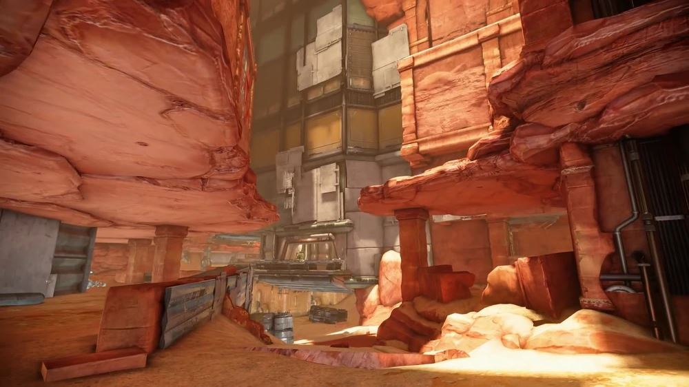
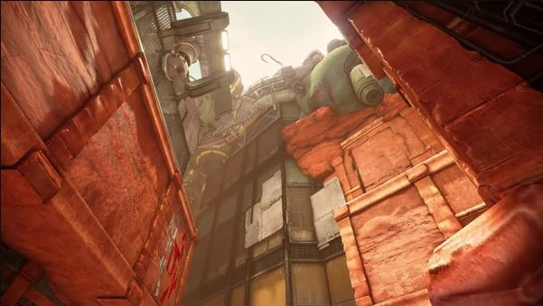
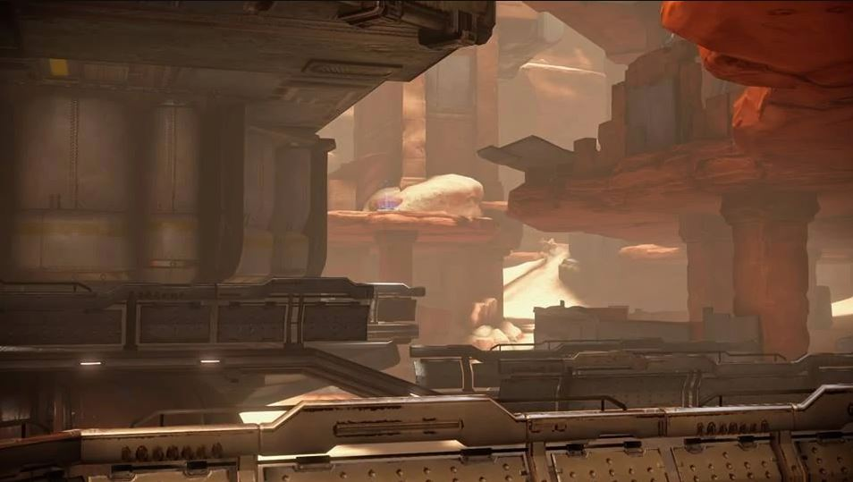
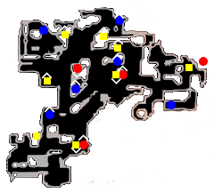
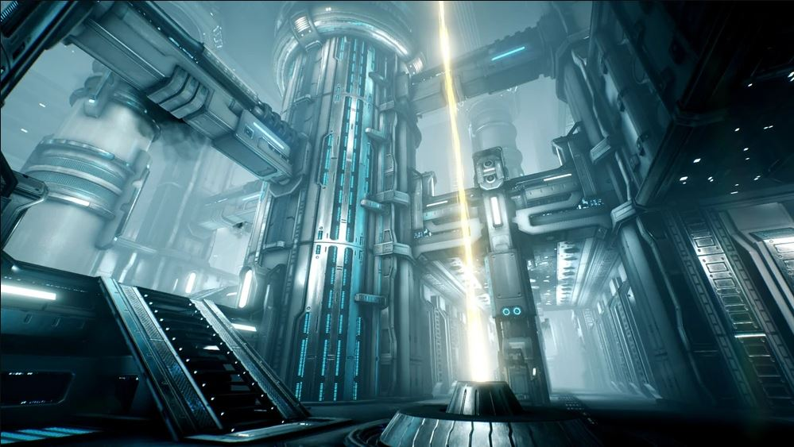
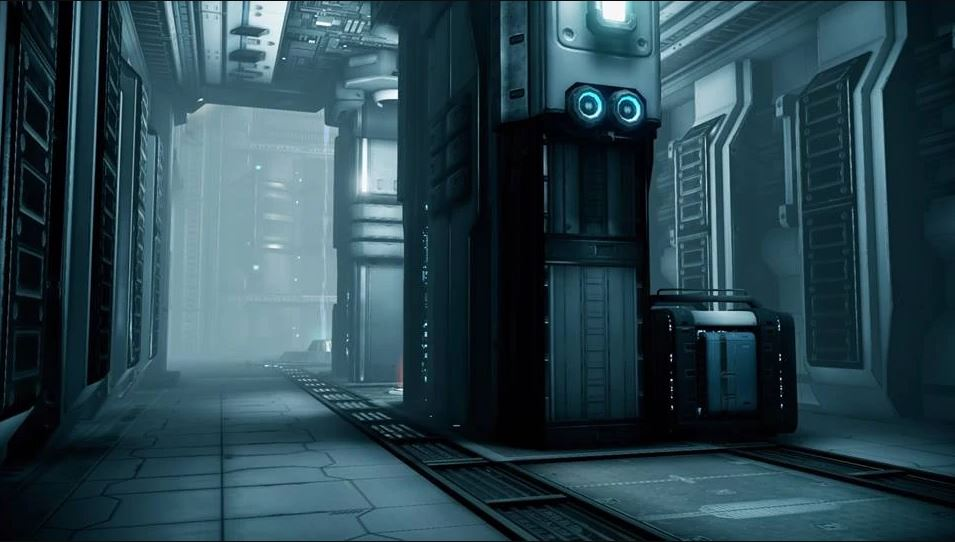
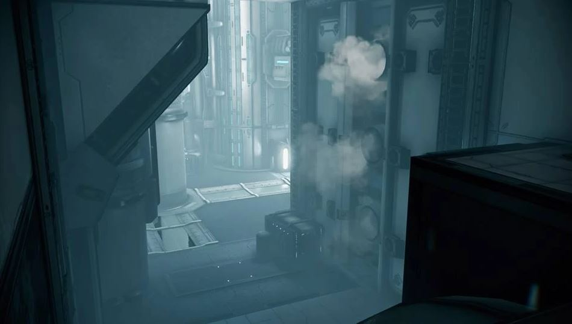
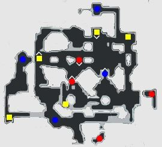

CANYON SETTLEMENT
An asymmetric settlement map with a mixture comprised of tight spaces with little rooms for fluid movements and small but open canyon-ways.





CORPUS'S POWER PLANT
This rectangular map gives players roundabout battles and narrow escapes in a mixture of close-quarters combat and mid-range fighting due to its height.


